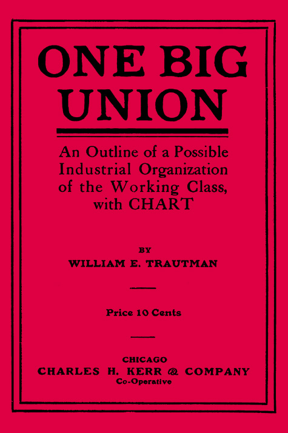

One Big Union
By W. E. Trautmann - 1911
Transcriber's Note: This is the first edition of a booklet that was revised and republished many times by both the I. W. W. and Daniel De Leon's "Detroit I. W. W." (later the W. I. I. U.), to which the author defected in 1913. Later editions are available on this site: 1919 and ca. 1924. The fifth revised edition (1915) published by the W. I. I. U. is in Indiana State University's Debs Collection in PDF format.

Social relations are the reflex of the grouping of industrial possessions. The owners of all resources and means of wealth form a class of their own; the owners of labor power as their only possession in the market, another. Political, judicial, educational and other institutions are only the mirror of the prevailing system of ownership in the resources and means of production.
One class owns and controls the necessaries, to-wit: the economic resources of the world. That class, for its own protection and perpetuation in power, subjects all other institutions to their prevailing class interests. Conversely, there is a class that strives to change the foundation of the industrial arrangement. The workers realize that immediately following the change these social relations will also be shifted; institutions deriving their support and sustenance from the class in power will be made to conform to new conditions after the overthrow of the previously existing industrial system.
Social structures collapse as a result of ever recurring changes in their economic foundation. But the new structure is not a ready-made product of each of the epochs of reconstruction. An historic process of evolution reaches a climax in a revolutionary upheaval. Achievements of preceding epochs are always utilized in the constructive work of a never-resting, always advancing civilization.
Decaying elements render nourishment to Mother Earth for the generation of new species and structures. Nothing is lost in the reciprocal process of nature. Precisely so in social systems. Achievements of social and industrial evolutions are always preserved after a revolutionary climax removes all obstacles to further developments. Only the class previously dominating the policies and actions of the social institutions is supplanted by the revolutionary change; one form of ownership in the means of life is shifted to another class.
Capitalist ownership of industries had its origin in the unfolding of conditions which hastened the downfall of the feudal age, and the advent of another class to power.
Co-operative control of industries by all engaged in the process of production must build its foundation on the highly perfected form and methods of production, and upon the conditions which accelerate the passing away of the capitalist system of ownership in the instruments of production and distribution.
The feudal lords had to surrender their sceptre to the ascending bourgeoisie, better known today as the capitalist class. The latter, at the outset, had in view only the free development of all forces of production, in an era of unrestricted competition between individuals. When, over a century ago, the change was consummated by revolutions, the instruments of production were more equally distributed. They were in possession of a multitude of the victorious capitalists, who owned small enterprises. Most people would expect that in such a competitive system as was then established, every one would have a chance to rise to a superior station in life. The instruments of production were not highly developed. Handicraft in the operation of small machines, or in the use of tools, still predominated. Small capital only was required in starting the manufacture of things for small margins of profits.
This epoch, beginning with the revolution of the "Third Estate" in France, found its counterpart in the revolution of the American people against British semi-feudalistic rule. Since then the forms, methods and yield of production have rapidly developed in one direction, in every industrially advanced country. The means of production were centralized ever more in fewer and fewer hands. With the centralization of the means of production and distribution, the agencies protecting the interests in power also grew proportionately. Gradually all elements that obscured the lines of cleavage between the producers of wealth and the class that expropriated all economic resources of the world are eliminated.
The manufacturers of yore exist only in small communities. They depend, however, more or less on the good will of those who permit them to exist by supplying them with the raw products for production, or those who own the transportation facilities by which the products are transported into the markets.
In this process of transformation other things can be observed. Social relations are shifting with the change in the forms and in the ownership of the means of production. Social strata are fiercely struggling for their conservation, in vain. There is no escape from the irretrievable result of these rapid changes in industrial possessions and arrangements.
The howls of freaks, the frantic appeals and clamors of reformers will not in the least affect the course of events. The destructive battles of trades unions, divided up in factions and sections that find their traditional base in the middle ages, will not turn back the wheel that rolls on with irresistible force.
The outcry, so often heard before, redounds in vociferous strength again: A revolution! "A revolution is needed to change these conditions." It is a cry of despondency. Not only heard from Socialists. They at least propose some way of consummating their program of a revolution. But the middle-class is more frantic in its wailings of despair. In their band wagon they are lining tip a large following of workers. Millions are made to believe that an impending struggle against predatory wealth will have as object the restoration of by-gone conditions, or the enforcement of restrictive measures for curbing further concentration of industries.
But the workers are not, and should not be concerned in the hopeless struggles of a decaying element of society. They have an historic mission to perform, a mission that they will carry out despite the promises held out to them that a restoration of past conditions would accrue to their benefit also.
They begin to realize that in the constructive work for the future they have to learn the facts of past evolutions and revolutions. And from these facts expressed in theories they find the guide for the course that they have to pursue in their struggle for the possessions of the earth, and the goods that they alone have created. That growing portion of the working class are building on the rockbed of historic facts, and the structure to be erected follows the plan that "It is the historic mission of the working class to do away with capitalism"—"the army of production must be organized. By organizing industrially the workers are forming the structure of the new society within the shell of the old."
Some definite conclusion must be drawn from the previously established premises. It is the heritage of the working class to utilize to the fullest extent the great achievements of the preceding and existing processes and methods of production, for the benefit of all useful members of society.
In its advent to power and supremacy the present economic master class succeeded another that decayed in the process of evolution. This mastery of the present owners of the economic resources will also give way and pave the way for successors. The workers, conscious of their mission, must recognize the fact that the industries are developing to the highest state of perfection, and will be ready for operation under a new arrangement of things, namely after the class now in possession and control of them have gone the way of decay under the pressure of the advancing force of a new civilization. But it is imperative to arrange the human forces of production for the operation of the vast resources and implements of production under a system wherein commodities will be made for use alone. To build and to arrange correctly, and for lasting purposes, the constructors of a further developed industrial structure must possess a thorough knowledge of the material, and of organizations destined to accomplish the task. The architects must know the proper grouping of each component part and cell in the composition of industrial combinations, so that, when harmony in the industrial relationship of mankind is established, it will be reflected in the harmonious social, political, judicial, and ethical institutions of a new age.
We repeat: Industrial and social systems are not ready-made products. In their changes from one stage to another they derive their propelling forces from the achievements and accomplishments of each preceding epoch. In its onward course to a further advanced system, society is going to utilize all that present day society has evolved and constructed. This the workers must know, and then they will also learn the intricate, interdependent arrangements of the component parts of the whole industrial system. Equipped with this knowledge, they will be able to construct and form their own industrial organizations, the frame-structure of the new society, accordingly. By learning the social relations and understanding their source, they can profit and prepare to change the industrial structure of society, which, as a matter of course, will determine also the changes in the social and political character of the system which is bound to be inaugurated. And this is the problem. The working class, as the promoter and supporter of a higher standard of social relations and interrelations, must be equipped with the knowledge, must construct the organizations, by which the cause of social classes can be removed. Industrial inequality is the source of all other inequality in human society. The change in the ownership of the essentials of life will bring, automatically, so to say, the change in the intercourse and the associations, and also in the institutions for the promotion of these things, between the human beings upon the globe.
Good will, revolutionary will-power, determination, courage are valuable assets in the struggle for the change. But they are like the water on the mill-wheels, unconscious of the great service that they are rendering. To convert force and power into useful operation requires intelligence. And that intelligence must guide us to use the accumulated force for a defined purpose. That purpose, as it seems to be agreed, is to form a new social, or rather industrial structure within the shell of the old. To accomplish this the advocates, the militants for the new, must know to what extent the present factors in industrial development have organized and systematized industrial production. When this is fully understood, this may also explain the subsequent domination of industrial possession over the political, social and other agencies in present day and previously existing societies.
The workers of the world, conscious of their historic mission, will learn to avoid the mistakes they would make should they depend on other forces than their own for the solution of the world's problem. Agencies and institutions deriving their lease of existence from the industrial masters of today can not be looked to for support. They may feign being in favor of radical changes in the effects—they will, however, strenuously and violently oppose any attempt at destroying the base, or the cause.
The working class alone is interested in the removal of industrial inequality, and that can only be accomplished by a revolution of the industrial system.
The workers, in their collectivity, must take over and operate all the essential industrial institutions, the means of production and distribution, for the well-being of all the human elements comprising the international nation of wealth-producers.
No destruction, no waste, no return into barbarism! A higher plan of civilization is to be achieved. When the workers understand how the industrial system of today has developed, how one industrial pursuit dovetails into another, and all comprise an inseparable whole, they will not wantonly destroy what generations of industrial and social forces have brought forth. The workers will utilize the knowledge of ages to build and to plant on a solid rockbed the foundation of a new industrial and social system.
The foundation must be firm and solid. The revolutionary climax, after an incessant course of evolutionary processes by which forms and methods undergo changes, will eliminate for ever the cause for the industrial division of society into two hostile camps. Harmonious relations of mankind in all their material affairs will evolve out of the change in the control and ownership in industrial resources of the world.
That accomplished, the men and women, all members of society in equal enjoyment of all the good things and comforts of life, will be the arbiters of their own destinies in a free society.
We present, with this introduction, to all our comrades in battle and strife, a portrait of industrial combinations.
Analysis of the Arrangement of Industries.
The Chart Explained in Detail.
The main object of this explanation to the chart is to show how industries are grouped together in a scientific order.
Production begins with the exploitation of the natural resources of the earth. Labor is applied to extract the material that nature has stored up or generated. Production continues with the transportation of these products, mostly raw material, or fuel-matter, to the centers of manufacture and commerce. The construction of places of shelter for a man and things, the building of agencies of communication, are functions of another industrial branch of the system. We observe, finally, how the care-taking, the education, the providing for public convenience, fall to the functions of another department in the interdependent processes of industrial life.
In presenting this plan of organization of industries, as it exists today, we have in mind only the object before explained. The workers, forced by capitalist ownership of the means of production to do service in all these industries, must organize themselves in their proper places in the industries in which they are engaged. Every worker who studies this map will find where he will fit in when the industries are organized for the control of the workers through industrial organization.
Of course, it is the ultimate purpose of this arrangement that every worker shall have equal rights, and equal duties also, with all others in the management of the industry in which he or she serves in the process of production.
But the other purpose, equally important, is to organize the workers in such a way that all the members of the organization in any one industry, or in all industries if necessary, cease work whenever a strike or lockout is on in any department thereof, thus making the injury to one the injury to all.
Of course, this can only be accomplished when the workers organize on industrial lines. That is to say, the workers of any one plant or industry must be members of one and the same organization,—no craft division lines. The capitalist institutions are today organized on exactly the same lines. The industries as they are grouped today, dovetailing into each other, furnish to the workers the basis for the construction of their organization for the struggles of today for better living conditions, and for the supervision and the management of industries in an industrial commonwealth of workers and producers.
DISTRIBUTION OF PRODUCTS IS PART OF PRODUCTION.
All natural resources of the soil, mines and water receive their first value when labor is applied to turn the products into useful things.
But all of these products have more social value when they are transported to places of manufacture and commerce, where they are transformed and converted into commodities for exchange.
The life of human beings will not consist of common drudgery alone when all the good things created are enjoyed by the workers.
For all purposes, present and the future, the functions of the public service institutions have to be defined, and people engaged in their maintenance must be given a place in the industrial organization; the same as those who take care of the sick and disabled. Those who render other social and public service should know they are engaged in useful occupation, although most of the institutions in which they serve today are prostituted for the protection of capitalist interests.
For all functions combined, the industries are arranged on the general plan presented on the map, as follows:
1. The Department of Agriculture, Land, Fisheries and Water Products.
2. The Department of Mining.
3. The Department of Transportation and Communication.
4. The Department of Manufacture and General Production.
5. The Department of Construction.
6. The Department of Public Service.
These departments again have their subdivisions. As it is proposed that the workers organize in accordance with the industries in which they are engaged in service, it is essential that a general term be applied. This will make it easier to understand that each of these industrial subdivisions constitutes for itself a sub-organization of workers, in which they will be able to govern affairs that appertain to that industry alone.
Each of these subdivisions would comprise the workers organized in a National Industrial Union, which, however would not be separate and distinct from all others, as the term "division" would imply. (We have looked in vain for an expression that would convey the proper meaning.)
It is impossible, at this stage, to eliminate entirely the terms now used to designate certain functions that sets of workers perform in each industry. But it should be distinctly understood that this is not to imply that these craft-groups in industries will organize, as has been the case heretofore, in separate craft-unions, or according to the tools that each set of workers use. That would mean dividing-up under another name. A worker in an industry will be assigned to the organization representing the product or products of that industry. Each sub-branch of the general industrial union is modeled accordingly.
When the workers engaged in a particular industrial production organize industrially, all are subject to the same rules governing the affairs of each industry. But certain fundamental rules and principles governing all component parts of the "one big union of workers" cannot be infringed upon by any of its component parts without doing injury to the whole organic body.
Still another point to be made clear: The process of production does not cease until the finished product reaches the consumer. All workers engaged in the process of distribution are members of the same industrial union, or Department Organization in which the makers of the commodity are organized.
Of course, the railroad and water-transportation workers will be in the Transportation Department, although it might be said that they also are engaged in the process of distribution. But here is the difference. They only transport goods to other localities or countries, and the real distribution process for use and consumption takes place after finished commodities have reached the merchant.
For instance: A salesman or clerk in a shoe store would be a member of the organization, or a branch thereof, in which are organized all workers engaged in the shoe industry. A teamster delivering meats, or other goods from a grocery, would be in the organization in which all the foodstuff workers of that particular branch are organized. But a truck driver, who may haul a big shipment of boxes containing garments from one depot to another, and on his next trip between depots, will haul a load of nails for further transportation or distribution, performs the work of a transport worker, and as such organizes in the unions of that industry.
With these necessary explanations, suggestive of a better understanding of the plan of organization, one will far better be able to see how industries are grouped on the accompanying chart.
I.
DEPARTMENT OF AGRICULTURE, LAND,
FISHERIES AND WATER PRODUCTS.
Four subdivisions comprise this department:
A. General and Stock Farming.
This subdivision comprises all workers employed in general and stock farming. 1. In grain and vegetables: All farm workers, in plowing, planting, reaping, and fertilizing operations—which would, of course, include all engineers, firemen, blacksmiths, repairworkers, carpenters, etc., working on farms and engaged in farm-product work. All workers on cotton and sugar plantations would come into this group, also all irrigation-workers, that is, all working at the operation of irrigation-systems as engineers, pumpmen, lockmen, pipe and repairmen, etc. 2. On cattle and live stock forms: Ranchmen, herders, sheep shearers, general utility men, all workers on fowl and bird farms; on dairy farms, etc.
B. Horticulture.
This subdivision comprises all workers on fruit farms, flower gardens, tea and coffee plantations, orchards, tobacco farms,—all workers engaged in the cultivation of silk, in vineyards, truck farms,—workers in hot-houses; fruit pickers, boxmakers and packers, etc.
C. Forestry and Lumbering.
In this subdivision are associated together all workers in forests; rangers, foresters, game wardens, woodchoppers and lumberworkers; all workers in the saw and shingle mills adjacent to forests, preparing wood for shipment for manufacturing purposes; collectors of sap, herb, leaf, cork and bark, etc.
D. Fisheries and Water Products.
In this subdivision are organized all fishermen on ocean, lakes and rivers; oyster and clam-bed keepers,—in short, all workers engaged in raising, keeping and catching of fish; in the collection of pearls, sponges and corals, such as divers, sorters, etc., which would include all mechanics on fishing boats and steamers, etc.
II.
DEPARTMENT OF MINING.
This department again consists of four large sub-divisions:
A. Coal and Coke Mining.
All coal miners comprise this national industrial union. All workers in bituminous and anthracite coal mines, including, of course, mining engineers, firemen, pumpmen, blacksmiths, mine carpenters, shotfirers, breaker boys. Also all workers employed in the production of coke, all miners of turf, peat; all workers in peat retort works, clerks in the offices of mines, and also all workers in the coal yards at the places of distribution, such as teamsters, shovelers, derrick-workers, weighers, etc.
B. Oil, Gas and By-Products.
The workers in this subdivision also organize to manage the affairs of this part of the mining industry, that is, all workers employed in the natural gas and oil fields, shaft sinkers, pipemen, pumpmen, tankmen, gaugers, and also all workers in the oil distribution places, as fillers, coopers, teamsters, all workers in the oil-refining plants, as well as oil by-product institutions.
C. Metal Mining.
This subdivision embraces all workers employed in the mining of gold, silver, copper, zinc, lead, tin, platinum, iron ore, etc., and in it are also organized all workers in the smelters, including the workers in the repair and mechanical departments, such as repairers, carpenters, machinists, ropemen, teamsters in the main and subsidiary enterprises, and also waiters, cooks in small mining camps.
D. Salt, Sulphur, Mineral, Stone and Gem Mining.
In this fourth subdivision of the mining department organization are brought together all workers employed in the mining of salt, sulphur, clay, borax, mica, bromine, graphite, sodas, gypsum, asphalt, limestone, sandstone, wheatstone, marble, anyx, slates, building stones, asbestos, and gems of all kinds, like diamonds, sapphires, etc.
It includes all workers in the refineries, in the salines, salt and soda dry works, quarry workers, etc.
III.
DEPARTMENT OF TRANSPORTATION AND COMMUNICATION.
Brief Preface.
The process of transportation, different from the process of final distribution, comprises the act of bringing the products of land, water, and mines to the places of manufacture and general production, and to re-transport the partly finished goods either to other places at which the process of production is finished, or to bring the finished goods to the points where the distribution to the users or consumers takes place. This process also includes the transport of human beings to and from one place to another. As the interchange process can not always be carried on by direct transportation of people, the indirect methods of transmitting commercial transactions by mail or by telegraphy is resorted to.
All the workers engaged in either of the sub-branches of that department are organized together. But, for expediency, they are grouped together in five national subdivisions, as parts of that department organization.
A. Long-Distance Transportation on Land.
This subdivision embraces all workers employed in the long distance railroad service, such as railroad engineers, motormen, firemen, conductors, trainmen, switchmen, all engaged in the supervision and maintenance of the roads, railroad freight yard workers, station watchmen, car repairers, railroad dispatchers and telegraphers; all workers in the railroad repair shops, all clerks in the railroad offices.
B. Marine Transportation.
In this subdivision are sailors and all workers on steamships, tugboats, which, of course, includes all waiters, stewards, nurses, on transportation vessels, also all longshore and freighthouse workers as are employed in the loading and unloading of vessels, clerks, freight teamsters, etc.
C. Municipal Transportation.
In this subdivision are organized all workers in municipal passenger transportation service, street car workers, all workers on elevated roads, or city subway lines, including all the workers in the power-producing plants, electricians, linemen, car shop workers, also cab drivers, automobile drivers, barn, stable and garage workers, wherever the service is directly connected with the municipal transportation service.
D. Air Navigation.
This will comprise all workers engaged in the service of air navigation, transporting passengers, dispatches, or anything else.
E. Communication.
All workers in the postal and commercial telegraph and telephone service are organized in this subdivision, such as clerks, carriers, mail wagon teamsters, telegraph and telephone operators, including the janitors, cleaners, etc., in all stations and houses.
IV.
DEPARTMENT OF MANUFACTURE AND GENERAL PRODUCTION.
If this department be subdivided in national industrial unions only, it would not give justice to those engaged in the various industrial sections that make up the complex organization embracing them all. The department comprises so many industries that it is necessary to establish a standard for their proper arrangement. Each kind of raw material transformed or converted into a finished article for use, be it either for food, or clothing, for comfort or general utility purposes, or for the production of instruments for the further development of advanced producing methods, forms the basis for a sub-department of production. Each sub-department again has its national sub-divisions. In other department organizations they are marked as parts of the same, while in this arrangement the national sub-divisions, or national industrial unions, form the component parts of a sub-department.
The Department of General Production is accordingly composed of the following sub-departments:
a. Glass and pottery (ceramic goods).
b. Clothing and textile.
c. Leather and substitutes.
d. Metal working and machinery building.
e. Woodworking goods.
f. Chemicals.
g. Foodstuffs.
h. Printing.
Sub-Department A.
Glass and Pottery (Ceramic Goods).
1. All workers employed in the making of glass wares are organized in the first subdivision of this flint glass, green glass, window glass, plate glass workers, furnace workers, mixers, blowers, gatherers, annealers, cutters, polishers, etc.
2. All workers in potteries, porcelain factories, china-ware factories, including decorators and designers, clerks, salesmen, teamsters in sales and distribution houses of ceramic goods.
3. Those employed in terra cotta works, tile and brick-making yards.
Sub-Department B.
TEXTILE AND CLOTHING MANUFACTURE.
This sub-department is composed of workers from the following industrial subdivisions:
1. All workers employed in the manufacture of silk, linen, cotton, wool and worsted articles, as mule-spinners, loom-fixers, weavers, warpers, carders, sorters, clerks and stenographers in factories and retail houses, all workers in dye-houses, including chemists, inspectors, also all workers employed in the making of knitting wares, possamenttery workers, wood silk workers, etc.
2. All those engaged in the making of garments and other goods of silk, artificial silk, linen, cotton and woolen fabrics, such as clothing workers, workers in collar and shirt factories, including all salesmen, clerks, stenographers in distribution places (dry goods stores).
3. All workers employed in establishments where wearing apparel is made of fur, felt, straw, etc., as furriers, glove makers, hatmakers, straw hat makers, millinery workers.
C. Sub-Department C.
MANUFACTURE OF LEATHER GOODS AND SUBSTITUTES.
This sub-department is composed of workers organized in three sub-divisions:
1. All workers employed in tanneries and leather preparing houses.
2. All workers engaged in the manufacture of shoes and boots, as cutters, lasters, inseamers, etc., which, of course, includes all clerks and stenographers in the offices, and the clerks in shoe stores and distribution houses of shoes, teamsters, engineers, firemen, etc., working in the shoe industry.
3. All workers in other leather goods, or substitutes of leather, such as harness makers, and horse goods makers, workers in belt factories, etc.
Sub-Department D.
METAL AND MACHINERY MANUFACTURE.
All workers employed in making goods of any kind of metal are grouped together in this sub-department, three subdivisions joining together to constitute the same, in which are organized:
1. All workers in blast furnaces, steel mills, rolling mills, tin plate mills, chairmaking establishments, wire mills, nail mills, including all workers in plants where by-products are manufactured, for instance, Portland cement mills.
2. All workers engaged in the building of locomotives, cars, stationary engines, and machinery, such as pattern makers, core makers, molders of iron, and other metals, machinists, all other workers in all these plants, including the workers in the power departments of such plants, machinery movers and teamsters, etc.
3. All workers employed in making of metal wares and products other than engines and machines, of different metals, such as workers in watch factories, knife and saw factories, in the making of jewelry goods, and utensils, and of instruments; silversmiths, goldsmiths, etc.
Sub-Department E.
MANUFACTURE OF WOOD ARTICLES.
This sub-department consists of organizations of workers employed in the manufacture of goods out of wood, or principally wood. It would embrace all workers in piano factories, planing mills, furniture factories, hotel and bar fixture factories; all workers in cooperage shops, in reed and rattan factories, box factories, etc. Of course, the workers of each of these industries would form a branch organization, embracing all the workers of one or more plants in which a given article is manufactured, for instance, in an industrial union of piano workers would be organized not only the wood workers, but also the metal workers, tuners, polishers, piano movers, etc., employed in that industry.
Sub-Department F.
MANUFACTURE OF CHEMICAL GOODS.
This sub-department comprises all workers employed:
1. In the production of paint, drugs, rubber, gutta-percha, powder, dynamite, melinite, and all explosives; inks, perfumes, turpentine, celluloid, soaps, etc., including chemists engaged in these pursuits, all workers in drug stores and pharmacies, as clerks and salesmen, etc.
2. All workers employed in the making of cellulose and paper, for printing and commercial purposes.
Sub-Department G.
MANUFACTURE OF FOODSTUFFS.
Made up of five national industrial subdivisions, this sub-department is composed of workers engaged: I. In the production of foodstuffs made of grain and cereals. II. In the production of foodstuffs made of animal matter. III. In the production of liquids for consumption. IV. In the production of narcotics. V. In the distribution of foodstuffs. As the process of production is not finished until the goods are put to use by the consumer all workers in the distributing places, that is, the workers in hotels, inns, restaurants, saloons, etc., form organizations connected with the foodstuff sub-department.
I. Comprises all workers in flour and cereal mills, in bakeries, biscuit factories, candy and confectionery shops, in sugar refineries, in fruit packing and canning plants, including, of course, all engineers, coopers, clerks, salesmen and delivery teamsters employed in any of such establishments.
II. This subdivision comprises all workers employed in meat packing houses, in all the fifty-nine factory departments; dairy and milk depot workers and deliverers, all workers in fish-packing houses.
III. In this are organized all workers in wine and whiskey distilleries, in breweries, malthouses, vinegar factories, ginger and cider mills, all employed in yeast production, and production of soda and soft drinks. These, as all other industries, include the workers in the power-furnishing departments of all these plants and the workers in the delivery and distributing stations, also clerks, stenographers in the offices, etc.
IV. The fourth subdivision comprises all workers employed in the manufacture of tobacco goods; cigar-makers, stogiemakers, cigarette makers, all other tobacco factory workers, clerks in cigar and tobacco stores, distributors, etc.
V. In the fifth sub-division are organized all workers in hotels and restaurants and saloons, as cooks, waiters, bartenders, bakers and butchers in hotels, barbers, if employed in the hotel service, chambermaids, hotel clerks, etc., chauffeurs and cabdrivers, if they are in the hotel service exclusively,
Sub-Department H.
PRINTING.
All workers in the printing and lithographing institutions arc organized in this sub-department. Printers, pressmen, bookbinders, photo-engravers, stereotypers, lithograph artists and printers, designers, editors of newspapers and magazines, proofreaders, including, of course, all machinists, engineers, firemen, electricians, janitors and clerks in the printing industry.
V.
DEPARTMENT OF BUILDING AND CONSTRUCTION.
This department is composed of three national sub-divisions:
A. All workers employed in the erection and construction of buildings are organized in this sub-division: Architects, designers, excavators, stone-masons, bricklayers, hodcarriers, cement workers, carpenters and joiners, electricians, elevator constructors, painters, architectural iron workers, plumbers, building material teamsters, etc. But these crafts are not organized in craft groups, but they form according to the nature of their work branch-organizations of the one "Building Constructors Industrial Union" in every locality.
B. In this sub-division are organized all workers employed in the construction of roads, tunnels and bridges, such as pavers, bridgebuilders, workers employed in the building of docks, subways, in the construction of irrigation works, of sewers, of canals, etc.
C. All workers engaged in the construction of ships and vessels are organized in this sub-division; in the building of steamers, launches, tug boats, as ship caulkers and carpenters, iron ship builders, machinists, boilermakers, coppersmiths and all other branches of workers directly engaged in this industry.
VI.
DEPARTMENT OF CIVIL SERVICE AND PUBLIC CONVENIENCES.
This department is composed of workers organized in six national industrial unions, constituting each a component part of the department organization.
A. Hospitals and sanitariums.
B. Sanitary protective division.
C. Educational institutions.
D. Water, gas and electricity supply service.
E. Amusement service.
F. General distribution.
A. In this sub-division are organized all workers in hospitals and health-restoration resorts, sanitariums, etc., such as physicians, nurses, waiters, cooks, attendants, laundry workers in these institutions, etc.
B. This is constituted of workers employed in the protection of health and public safety, that is, all workers employed in the cleaning and care-taking of streets, public places and parks, the street-protection workers, all workers in immigration stations, house janitors, office building workers, all workers employed in burial places, as funeral teamsters, embalmers, grave diggers, crematorium workers, etc.
C. In this sub-division are organized all workers in public schools, and all institutions of learning, education and instruction, such as teachers, lecturers, librarians, including also all workers keeping the institutions in sanitary and wholesome condition, such as school and university wardens, janitors, engineers, firemen, etc.
D. This sub-division is composed of workers in municipal power houses, pumping stations, all workers in plants supplying to communities power, gas, electricity, etc.
E. All workers in theaters, amusement places, concert halls and gardens, on ball play grounds, in summer-resort and amusement places organize themselves into this sub-division, such as actors, musicians, stage workers, singers, ushers, waiters in amusement places, etc.
F. The big department stores and distribution houses, with thousands of workers employed in each, have more or less assumed the functions of public service institutions. Not one specialized article, but in fact any and all kinds of commodities and fabrics are going through the process of distribution.
It would be well-nigh impossible to organize the workers in that service according to the goods that they handle in the process. Therefore, all the workers in these distribution stores are organized together into unions as component parts of the one sub-division, which in turn is a part of the department-organization of public service workers.
Tailors in department stores, clerks in the shoe department of a department store, or any other worker, irrespective of the place of employment, of the tools they use, are organized together; stenographers, clerks, tailors, repairers, freight-handlers, packers, department store drivers, bakers, candy makers, etc., in these stores, all are members of one industrial union.
CONCLUSION.
When now and then advocates of a better system of society refer to the new unionism they do it, in most cases, without knowing fully the distinction between the old kind of unionism and the unionism that advocates—One Big Union for the Entire Working Class the World Over! But, even if the critics of this plan of action disagree with the author of this booklet as to the means to attain a desired end, they can no longer plead that there never has been any literature presented in which the program of the industrial unionists or syndicalists has been enunciated.
Organize industrially; organize right! This is the call to the downtrodden heard all over the world. In increasing numbers the proletariat of every country is enlightening itself on the subject, and everywhere workers are preparing for organizations in which they will find the embodiment of their collective power and the instrument for direct, and also indirect action, just as occasion and conditions may command. All countries of the world are governed, principally, in the interests of the small class controlling industrial combinations. Whenever the workers aimed heavy blows at these interests directly, that is, when they refused to serve, temporarily, in the production process of these industries, the exploiting class all over the world burst out in frantic denunciations of the forces that had so little regard for private property.
The industrial unionists propose to organize the workers for more militant action within present-day society, so that, with every advance gained, the workers will gain an appetite for more and for all, and will find the means to get it.
And in all these days of unrest and struggle the industrialists are preparing the administrative, the government agencies, for the industrial commonwealth. Representatives elected by the workers, organized in their industrial organizations, will constitute the industrial parliament of the future, the workers' commune in municipal, national and international affairs.
STUDY THE CHART.
Observe how commercialism, the main factor in the development of the capitalist system of production, encircles the whole globe with the means and tributaries at its service:
Transportation facilities as the messengers for the exchange of products between countries and continents know no boundary lines—land, water, air have been conquered and rendered servants of the monstrous forces behind the prevailing industrial system of production and exchange.
Industrial development has wiped out boundary lines between sectional territories.
National dividing lines disappear before the invincible force of the conqueror.
Continents so long separated by landmarks and obstacles of natural origin are linked and joined together by the gigantic weld of that international carrier of exchange and distribution.
But the functions of that agent of a social system are still today confined to the service of profit—production for a few.
What still remains, in the minds of mankind, as a force for separate nationalities, is merely imaginary.
A heavy load of traditional falsehoods, holding living human beings in a bondage of ignominious, deep-rooted, and ingeniously fostered intellectual, and hence also in industrial, serfdom must disappear; national separation must be swept aside by the advancing forces of international co-operation, before the highest and most marvelous stages of industrial development, social progress, and perfection in the utilization of all elements subservient to the generating powers of mankind, can he achieved, and a higher order of civilization he established.
THE SECOND INTERNATIONAL LINE.
Observe also how a second transcontinental line connects the world's component parts into one inseparable whole. Science and scientific research and discoveries are the international agencies by which the riddles and miracles of the universe, in all their magnitude, are solved and explained. Institutions of learning, schools and universities are linked together by the uniformity of fundamental laws governing science and the dissemination of knowledge and discoveries.
Likewise are evils and afflictions, springing irresistibly from the same sources, suffered alike by all living beings throughout the world. Remedies and means of prevention must, consequently, assume the character of international agencies, deriving their support from the necessity of eliminating and curing the evils, and of removing the causes for their existence.
Hospitals, as curing stations; cleaning, sanitary and protective agencies, as institutions for prevention; the supply stations of water, light, and other means of public need are therefore joined together with the institutions of learning and with the agencies for recreation and amusement, into one great chain of international dependence, and are formed and maintained in the pursuit of functions preventative as well as beneficial, as the promoters and protectors of public interests and universal weal.
FOUR CARDINAL FUNCTIONS.
Observe, then, how in the complex process of production of the necessities of life four cardinal functions comprise the interlocking chain of industrial activity, through which the resources of the earth must run before their ultimate use.
A. From the soil, the woods, and the waters all material required for producing purpose, is secured by the labor of the millions serving in the social process in raising and procuring the raw products for food, raiment and shelter.
B. From the bowels and the treasures of the earth labor puts out the material for fuel and the essential things which, after being transformed, comprise the implements and machinery of production and distribution.
C. With the matter thus furnished production proper for the providing of all necessary things of life and comfort is carried on in the various, but inter-depending places of production, mills and factories.
D. With all these things combined the constructive hand of labor builds the houses of shelter for the protection of life and matter against the adversities of nature's forces, and harnesses them to render service for social good.
LABOR THE SOLE PRODUCER.
To all of the making and development of these social institutions the workers, and they alone, contribute their intellect and their manual labor. They have created the instruments to produce wealth with, and improved them as time rolled by.
These institutions arc organized in their operative functions to yield profits for a few who never did, nor do, contribute to their making and maintenance, except in a manner to protect them in the possession of things that they did not make.
The human forces rendering these instruments, agencies and implements useful to all society, and adding value to matter and forces of nature, are divorced from their creations by powerful combinations of parasitic nature, by which a few control all the co-ordinate stations of industrial life through the means that they have organized and subjected to their rulership. Against these hostile powers the workers must organize their own resources and their own collective power, in organizations embracing all useful members of society and wealth producers.
THE MISSION OF THE WORKING CLASS.
By Thomas J. Hagerty, and W. E. T.
A labor organization to correctly represent the working class must have two things in view.
First: It must combine the wage-workers in such a way that it can most successfully fight the battles and protect the interests of the workers of today in their struggles for fewer hours of toil, more wages and better conditions.
Secondly: It must offer a final solution of the labor problem—an emancipation from strikes, injunctions, bull-pens, and scabbing of one against the other.
Observe
How this organization will give recognition to control of shop affairs, provide perfect industrial unionism and converge the strength of all organized workers to a common center, from which any weak point can be strengthened and protected.
Observe, also,
How the growth and development of this organization will build within itself the structure of an industrial democracy, which must finally burst the shell of capitalist government and be the agency by which the workers will operate the industries and appropriate the products to themselves.
One obligation for all.
A union man once and in one industry; a union man always and in all industries. Universal transfers, universal emblem.
All workers of one industry in one union; all unions of workers in one big labor alliance the world over.
Industrial unionism is not confined to one country. The best expression of it is found in America, in the Industrial Workers of the World, although the organization may appear to be still weak, numerically. But the conditions for the advent of the industrial revolutionary union are most promising, because the most advanced and highly developed industrial system of production is bound to find its counterpart in a similarly perfected organization of the working class on the industrial field.
As presented in this booklet, these institutions for wealth production, so well organized, so masterfully constructed, suggest the best forms of industrial organizations for the workers.
Industries are organized in six big departments, which are composed of forty-three subdivisions.
This arrangement is not arbitrarily fixed, or the product of one man's notion. The best tabulations of statistical experts of different countries have been consulted, and the systematic arrangement will stand the test of scientific investigation.
Of course, it has been stated, and is herewith reiterated that this arrangement of industrial organization of workers would also assure the most effective solidarity of all producing forces in their defensive and aggressive struggles for the amelioration of the evils they suffer under, evils inherent in the capitalist system of distribution of the commodities created by Labor.
When the workers organize in industrial unions, copied from the institutions in which they are employed, they will he able to stand together as powerful industrial combinations in their skirmishes for better working conditions in any one industry. Not separated by craft divisions, or trade union contracts with the exploiters, they will not only be able to curtail production on a small scale and thus also the profits of the employers of labor, but they will abruptly stop production altogether, if necessary, in any one industry, or in all industries of a locality, or of a nation, or they can, when they are powerful enough, shut the factories against the present employers and commence production for use.
The workers, though, must tear down, as a first duty to themselves, all craft demarkation lines, the remnants of a by-gone age. Unhampered by that drag-chain, they can then develop and organize their industrial power. But that power must be guided in its use and exercise by the collective intelligence which will develop simultaneously with the generation of power. Equipped with the power of an industrial organization, with the knowledge gained in the every-day struggle against the oppressors, they will successfully strive for a higher standard of life-conditions, within this system, and they can master things and forces so that they will reach the final goal of all efforts—complete industrial emancipation.
Hundreds of thousands of workers in every civilized country arc learning to understand the principles of industrial unionism. Thousands are organizing for the battle of today, for better conditions, and for the final clash in the future when the general lockout of the parasite-class of non-producers will end the contest for industrial possessions and political supremacy.
If you are one of the millions needed to accomplish the task, join the industrial union composed of workers in the shop or plant where you work. If none exists, he the first to get busy. Get others, organize them. Learn to tackle the industrial problems. Show others how the workers will be able to run the industrial plants through the agencies of their own creation, locally, nationally, internationally, the world over.
There are organizations everywhere, and where there are none, they will be formed. In the industrial union movement alone will the workers forge the sword, train themselves for the use of all and every weapon that can be utilized in the struggle for a better world. In the industrial union movement the workers will strictly adhere to the great words of a great thinker, Karl Marx:
"The emancipation of the workers must be achieved by the working class itself.
"Workers of the World, Unite!"
For all information: regarding the Industrial Workers of the World referred to in this booklet, write to Vincent St. John. General Secretary-Treasurer, 518 Cambridge Building, Chicago, Ill.
The only popular illustrated magazine in the world that advocates industrial unionism is the International Socialist Review. Every month it gives the latest news of the class struggle, with photographs taken where things are doing. $1.00 a year, 25c for three months, 10c a copy. Order a bundle to sell at your next meeting; 20 copies mailed for $1.00.
The volume entitled "Debs: His Life, Writings and Speeches," contains all of Eugene V. Debs' most important writings on Industrial Unionism. Cloth, illustrated, 515 pages, $1.00 postpaid.
The Pocket Library of Socialism includes six books by Debs and one by Trautmann on industrial unionism. One each of the seven books mailed for 15c; 100 assorted copies for $1.00. The books retail for 5c each.
Catalog of new and standard socialist books mailed free on request, Address
CHARLES H. KERR & COMPANY, Publishers
118 West Kinzie Street, Chicago
Transcribed by J. D. Crutchfield from a photocopy kindly provided by FW Steve Kellerman. The photocopy starts with the title page and ends with the last page of text, so this transcript lacks the cover and any end matter (advertisements, etc.). I would be grateful to anybody who can supply me with scans or photocopies of the cover and the missing pages. A color scan of the whole booklet would be ideal.
Last updated 31 January 2005.